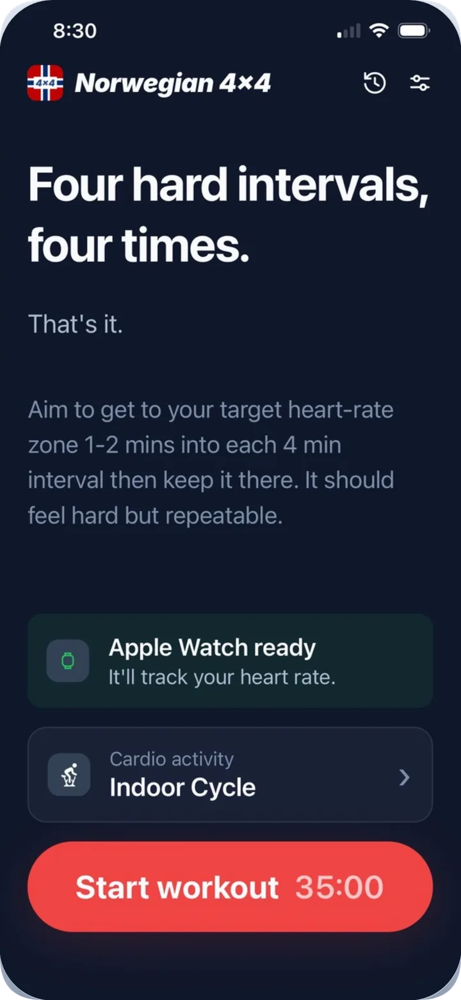
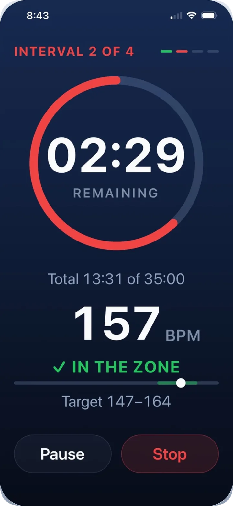
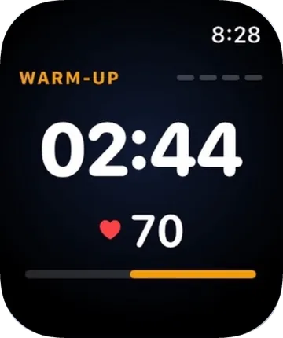
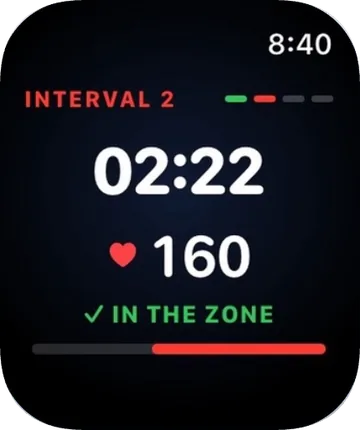
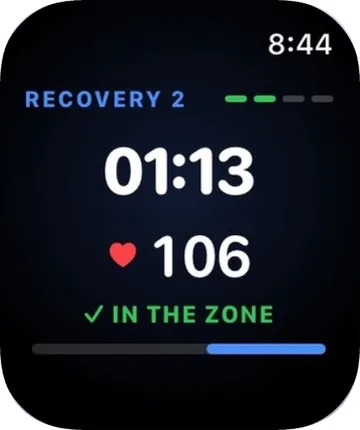
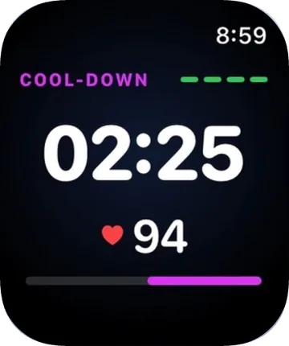
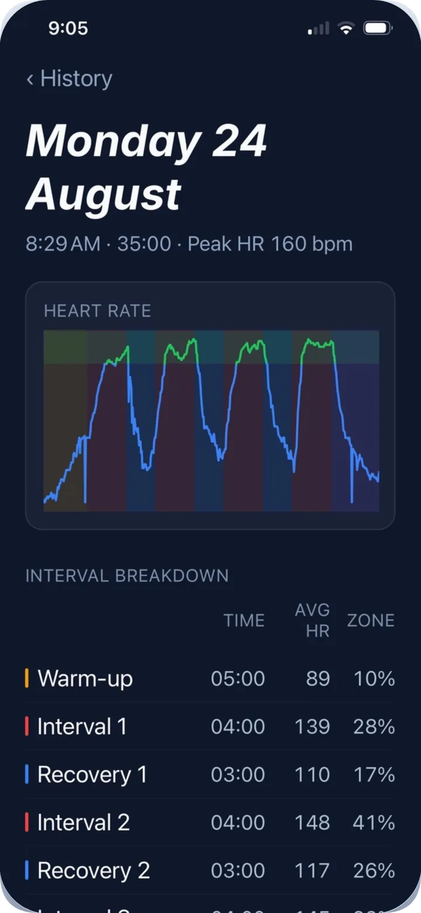
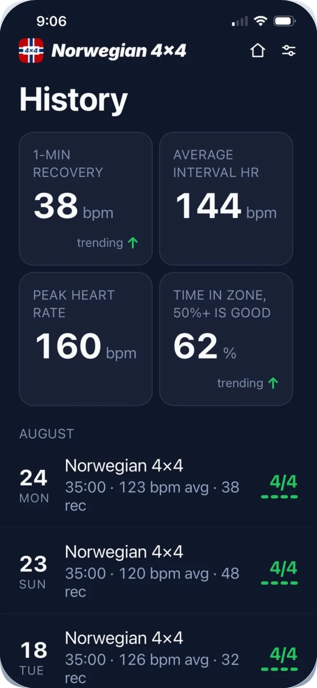
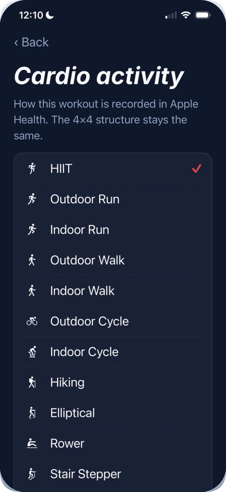
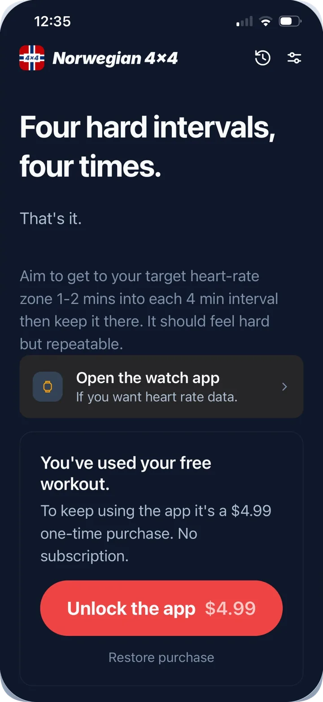

iPhone and Apple Watch
The Norwegian 4x4 workout, in one app.
The Norwegian 4x4 is the interval session with the most evidence behind it. This app runs it: a timer, a heart rate target, and clear coaching, with your Apple Watch or any Bluetooth heart rate monitor.

How it works
Thirty-five minutes, start to finish.
The protocol is fixed, and that is the point. The app holds the structure so you only have to hold the effort.
-
Warm up easy
Five minutes to get the blood moving. Adjustable in Settings if you need longer.
-
Four minutes hard
Climb to your target zone in the first minute or two, then hold it. Hard, but repeatable.
-
Three minutes easy
Active recovery. Keep moving. You are not meant to come all the way back down.
-
Repeat until four are done
The fourth interval should feel like the first. If it does not, you started too hard.
-
Cool down
Five easy minutes, then the session saves to Apple Health.
New to the workout? Read what the Norwegian 4x4 workout is and how to do it.
Features
Everything you need mid-interval. Nothing you do not.
Live zone coaching
A big countdown, your current heart rate, and one clear instruction. The app tells you whether to push, hold, or back off, in color and in words, so it reads at a glance while you are breathing hard.

Your watch or your strap does the measuring
Heart rate can come from an Apple Watch or any Bluetooth heart rate monitor, like a chest strap or a watch in broadcast mode. Whatever you use, the app reads it live and shows the phase, the countdown, and your zone.
On the Apple Watch, phase color tells you where you are without reading a word: amber warm-up, red interval, blue recovery, purple cool-down. No monitor at all? The timer still runs on iPhone alone.




Every session, broken down
After the cool-down you get the whole session: the heart rate trace with each phase shaded behind it, and a per-phase table of time, average heart rate, and how much of that phase you spent in the target zone.

Progress you can actually see
One-minute heart rate recovery, average interval heart rate, peak heart rate, and time in zone, tracked across sessions so you can watch the numbers move. Aerobic fitness changes slowly. The trend is how you see it move.
- 1-min recovery
- 38 bpm
- Time in zone
- 62%

Any cardio you like
Bike, run, row, ski erg, stairs, uphill walk. Pick the activity before you start and it records to Apple Health as that activity. The protocol does not care how you raise your heart rate, only that you do.

The science
Why four, and why four minutes.
The 4x4 came out of Norwegian exercise-science labs as a way to spend the most possible time near maximal aerobic capacity. Four minutes is long enough to get there. Three minutes of easy work is short enough that you have not fully recovered when the next one starts.
A target range, not a guess
The app works from your maximum heart rate and aims each interval at roughly 85 to 95 percent of it. Set your HRmax yourself in Settings, or let the app estimate it from your age using the Tanaka formula: 208 - 0.7 x age.
Recovery as a signal
How fast your heart rate drops in the minute after an interval is one of the clearest at-home markers of aerobic fitness. The app calculates it on your device after every session and trends it over time.
Not medical advice
These are training metrics, not clinical measurements. The 4x4 is a genuinely hard session. If you are new to high-intensity work or have a heart condition, talk to a doctor first.
Privacy
Your data stays on your devices.
There is no server to send it to. Norwegian 4x4 has no account system, no analytics, no crash reporting, and no advertising SDKs.
HealthKit, on device
With your permission the app reads heart rate and writes workouts and active energy to Apple Health. That data is used to run and record your session, never for advertising, never sold, never shared with third parties.
History stored locally
Your session history lives in local storage on your iPhone. Delete a single workout from the History screen, or clear all of it from Settings. Uninstalling removes it.
No tracking, at all
The app does not track you across apps or websites, which is why it never has to show you the tracking prompt. Read the full privacy policy.
Pricing
First workout free. Then $4.99, once.
One purchase, yours for good. No subscription, no tiers, no upsell mid-interval.
- Trial
- 1 workout
- Then
- $4.99
- Renewal
- Never
Universal purchase, the Apple Watch app is included.

Requirements
What you need.
iPhone
Required. Runs the timer, keeps your history, and saves completed sessions to Apple Health.
Apple Watch or Bluetooth monitor
Optional, and where heart rate comes from. Use an Apple Watch or any Bluetooth heart rate monitor. Without one you get the timer and the structure. With one you get live zone coaching.
Apple Health
Permission to read heart rate and write workouts and active energy. You can decline and still use the timer.
FAQ
Questions people ask.
What is the Norwegian 4x4 workout?
You warm up, do four hard 4-minute intervals at high effort with 3 minutes of easy recovery between them, then cool down. It is one of the most studied workouts for building aerobic fitness and VO2max.
Do I need an Apple Watch to use the app?
No. Heart rate zone coaching works with either an Apple Watch or any Bluetooth heart rate monitor, such as a chest strap or a watch in broadcast mode. On an iPhone alone with neither, the app runs as a guided interval timer.
How do I set my maximum heart rate?
The app estimates your maximum heart rate from your age using the Tanaka formula (208 - 0.7 x age), or you can set it yourself with Manual Override in Settings.
Can I change the interval durations?
The 4x4 protocol uses fixed 4-minute intervals and 3-minute recoveries. You can adjust the warm-up and cool-down durations in Settings.
Is the app free?
Your first workout is free. After that it is a one-time $4.99 purchase. There is no subscription.
Does the app collect my data?
No. There is no account, no ads, and no analytics. Everything is computed and stored on your device, and nothing leaves it.